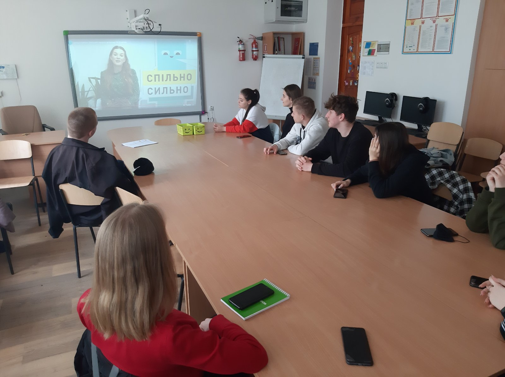
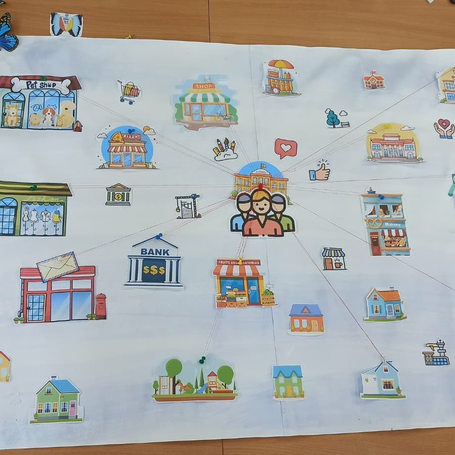
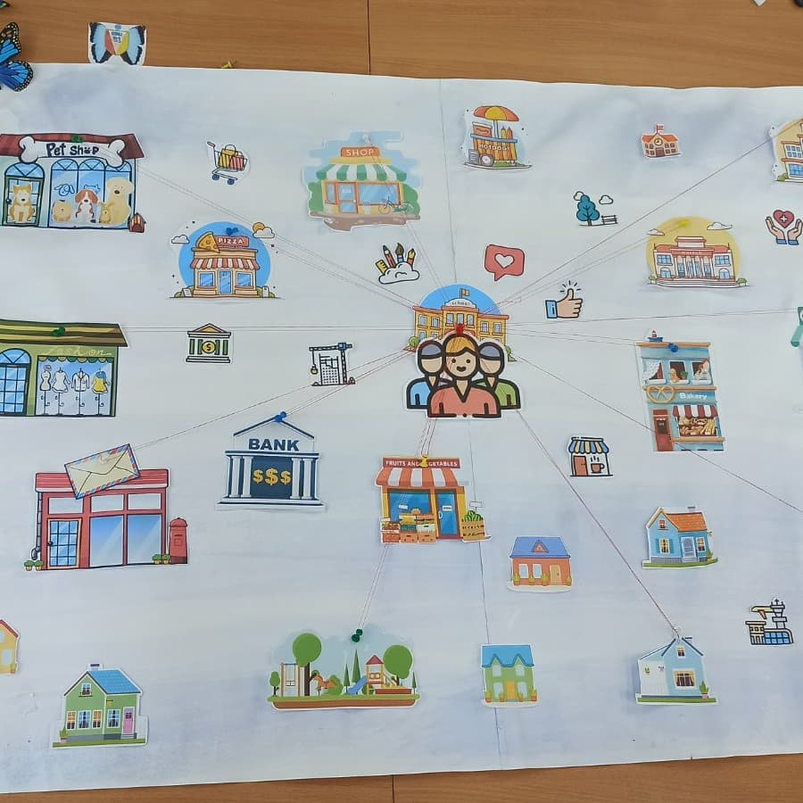
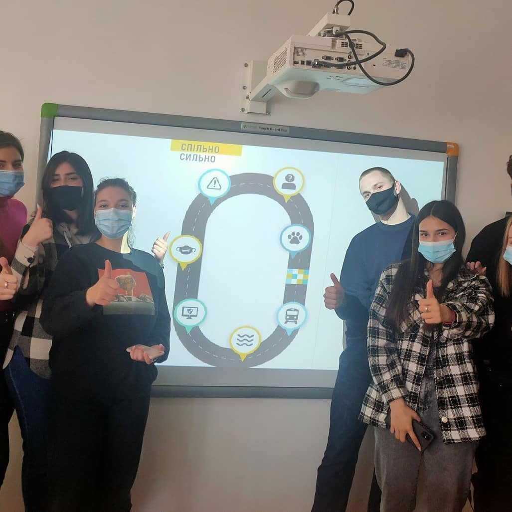
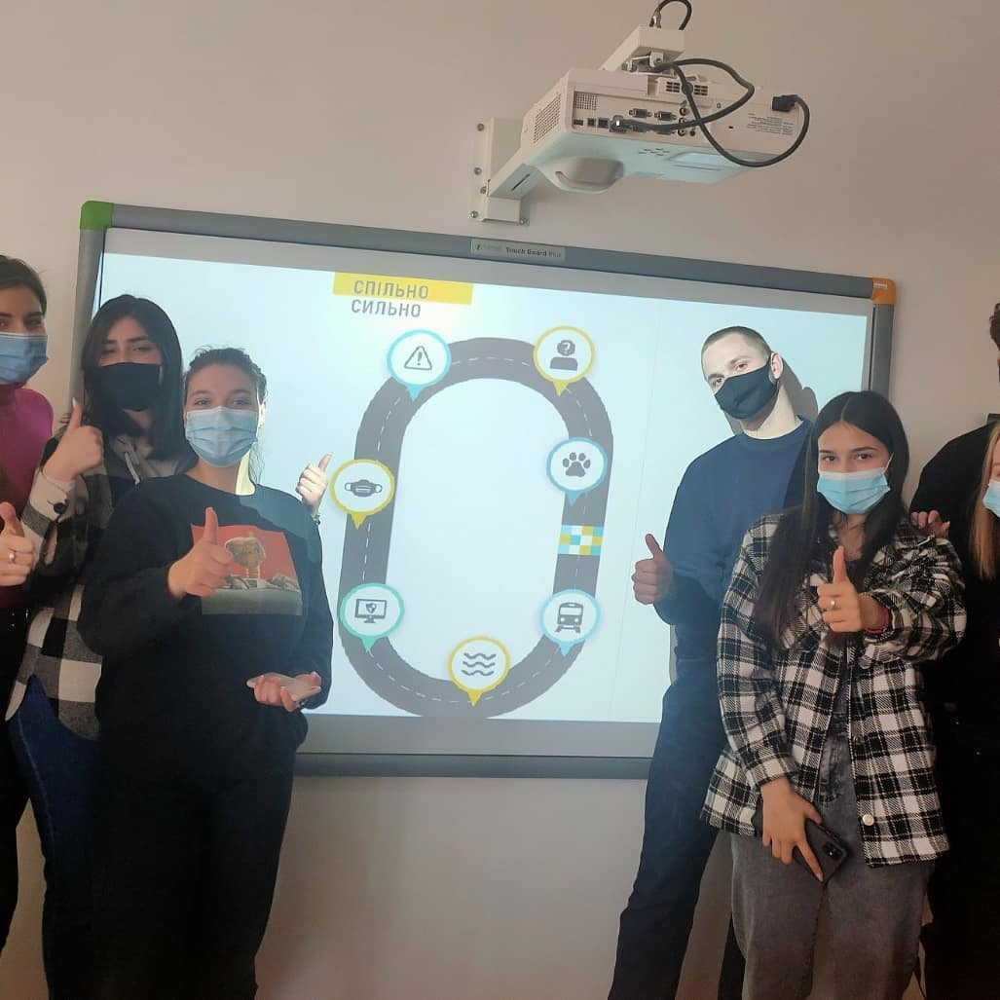
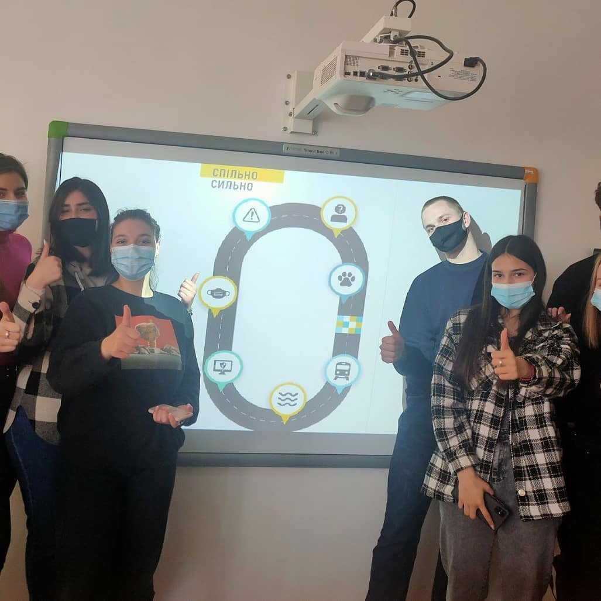
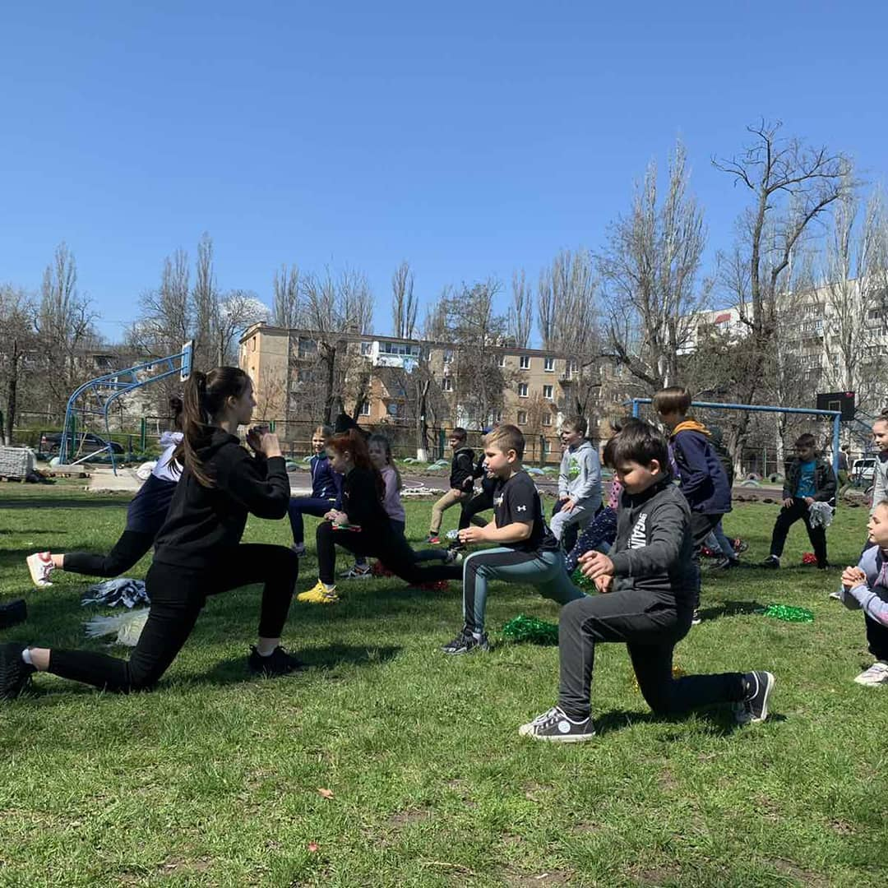
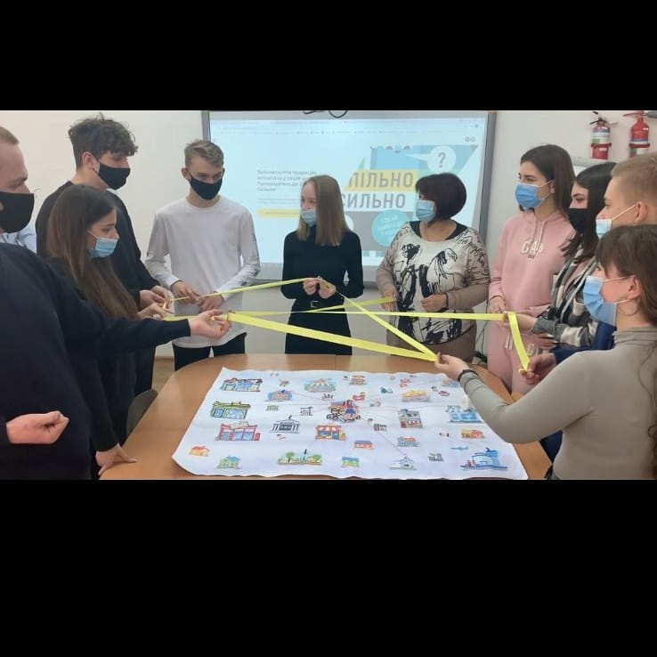

Зустріч-знайомство
19 квітня команда активістів Одеської школи №31 "Відродження" приєдналася до шкільного тижня
активізму, який є частиною
програми.
Нам не склало труднощів швидко зібратися і почати діяти.

«Мріємо та діємо»! Це чудова можливість не тільки покращити свою громаду на краще, а ще чудова можливість
познайомитися і поспілкуватися
зі своїми
однолітками з усієї України та покращити свої лідерські якості.
Мапа громади
Сьогодні другий день проекту, який має назву "мапа громади".
Команда малювала мапу громади, де вони мешкають. Разом обирали та відзначали свої улюблені місця перебування та відпочинку.  Уявляли себе супергероями та визначали, що могли б покращити в тих чи інших місцях на мапі. Визначали, що могли б покращити своїми силами..jpg)
Команда малювала мапу громади, де вони мешкають. Разом обирали та відзначали свої улюблені місця перебування та відпочинку.  Уявляли себе супергероями та визначали, що могли б покращити в тих чи інших місцях на мапі. Визначали, що могли б покращити своїми силами.
"Мозковий штурм"
В середу "Відродження" визначала актуальні проблеми
нашої громади методом голосування.
Одна з них
виявилася довгостроковою, яка потребує підтримки від партнерів.
В телефонному режимі ми
обговорили наш проєкт з
представником місцевої влади.
.jpg) Так як темою Шкільного тижня активізму Спільно сильно визначено Громадське здоров'я, ми
вирішили провести наступний
спортивний ранок разом з учнями початкових класів.
Сьогодні ми розробили постер "ТУТ БЕЗПЕЧНО", де зазначили основні зони нашої безпеки.

Так як темою Шкільного тижня активізму Спільно сильно визначено Громадське здоров'я, ми
вирішили провести наступний
спортивний ранок разом з учнями початкових класів.
Сьогодні ми розробили постер "ТУТ БЕЗПЕЧНО", де зазначили основні зони нашої безпеки.

Так як темою Шкільного тижня активізму Спільно сильно визначено Громадське здоров'я, ми
вирішили провести наступний
спортивний ранок разом з учнями початкових класів.
Сьогодні ми розробили постер "ТУТ БЕЗПЕЧНО", де зазначили основні зони нашої безпеки.

Від слова до діла!
У четвертий день шкільного тижня активізму Спільно сильно "Волонтерство в громаді". Наша
команда
вирішила започаткувати в
школі ранкові зарядки для учнів початкових класів і почала прямо сьогодні.

Нам вдалося перевершити власні очікування: ми змогли не тільки продемонструвати, що спорт --
це корисно і весело, а ще надихнути низку учнів робити зарядку щоденно.
.jpg)
Рефлексія
У останній день шкільного активізму "СпільноСильно".
Усі учасники нашої команди наголосили, що отримали задоволення від участі у проєкті.
Виконуючи
завдання "Павутинка"
кожен розповів про те, на що його надихнула робота: дослухатися до оточуючих, працювати в
команді, неординарно мислити і
разом знаходити рішення будь-якій проблемі.

Підводячи підсумки, в нас з'явилась можливість
пограти в "Дартс", де
більшість учасників відмітили, що ми чудово впоралися зі своїм завданням на цьому тижні!
.jpg) Отже, в ході цього проєкту ми навчилися самостійно знаходити проблеми, що турбують мешканців
нашого району, спільно й
творчо підходити до їх розв'язання. Зробили свій внесок у розвиток громади, аби покращити її
для
всіх разом і кожного
окремо. А головне, впевнилися в тім, що спільно - це сильно!
Отже, в ході цього проєкту ми навчилися самостійно знаходити проблеми, що турбують мешканців
нашого району, спільно й
творчо підходити до їх розв'язання. Зробили свій внесок у розвиток громади, аби покращити її
для
всіх разом і кожного
окремо. А головне, впевнилися в тім, що спільно - це сильно!
.jpg)
Отже, в ході цього проєкту ми навчилися самостійно знаходити проблеми, що турбують мешканців
нашого району, спільно й
творчо підходити до їх розв'язання. Зробили свій внесок у розвиток громади, аби покращити її
для
всіх разом і кожного
окремо. А головне, впевнилися в тім, що спільно - це сильно!